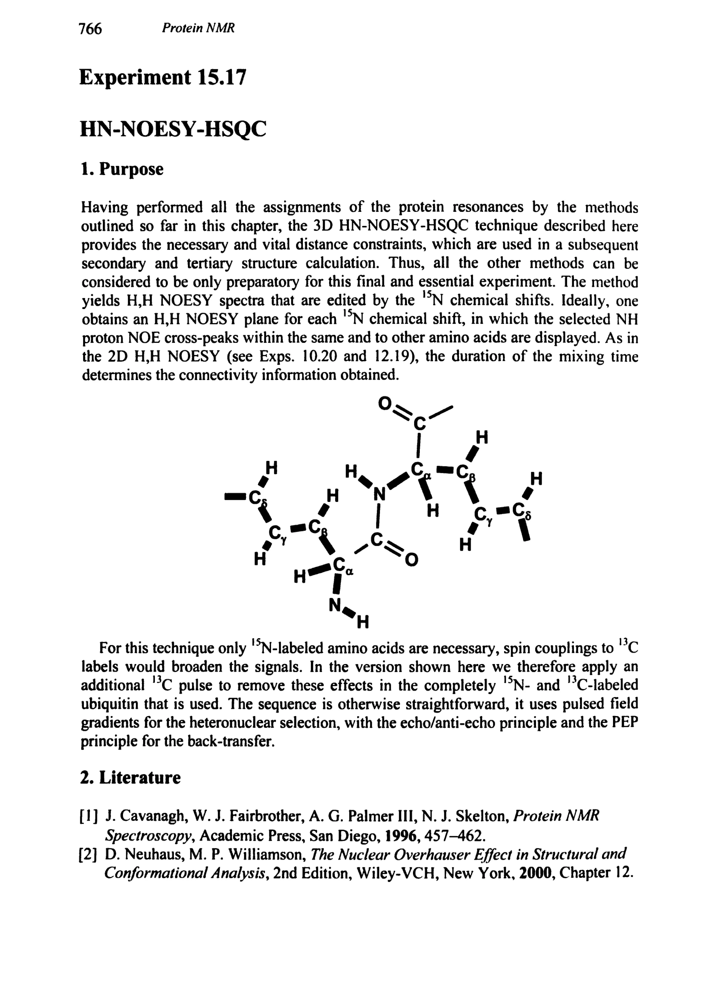
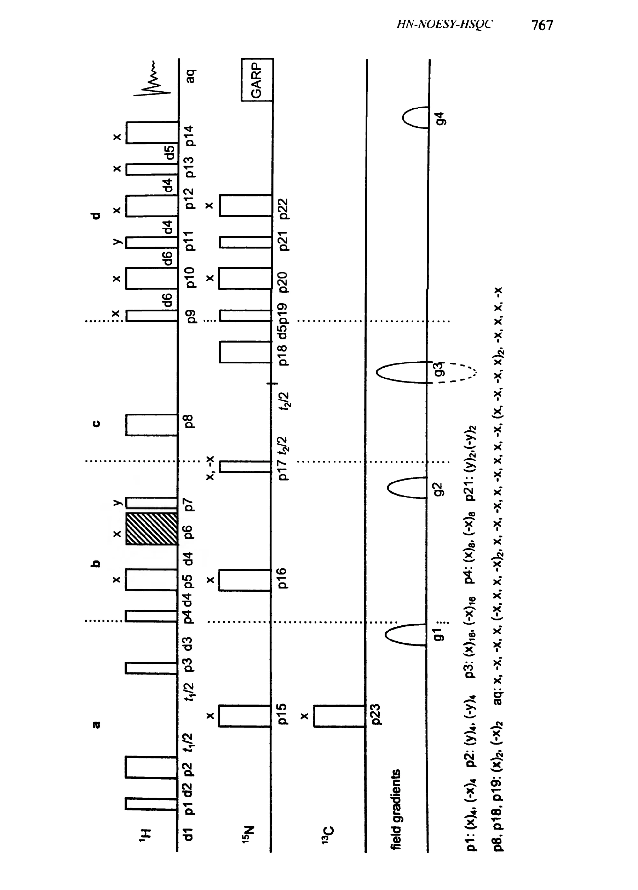
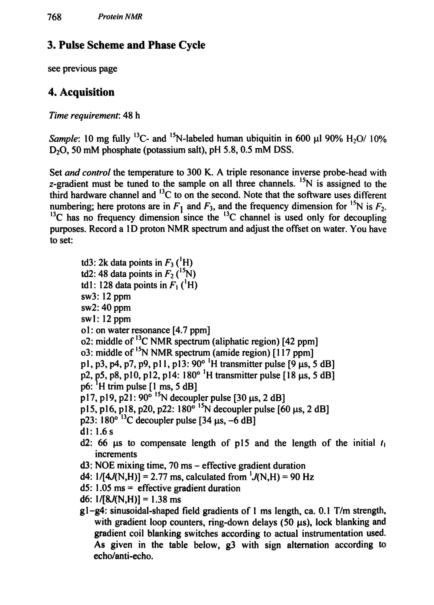
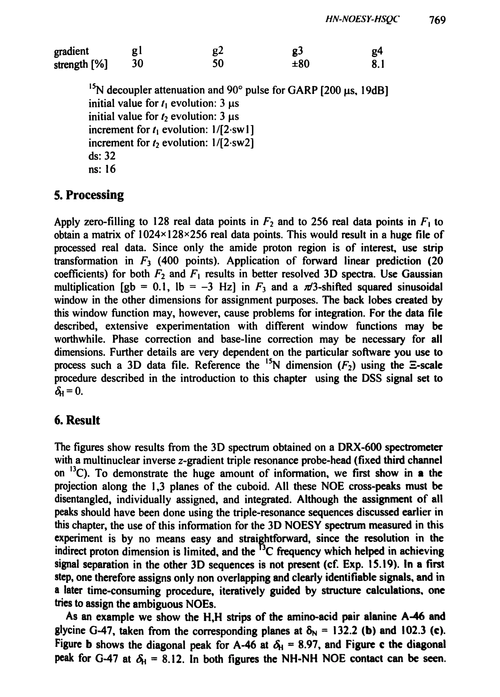
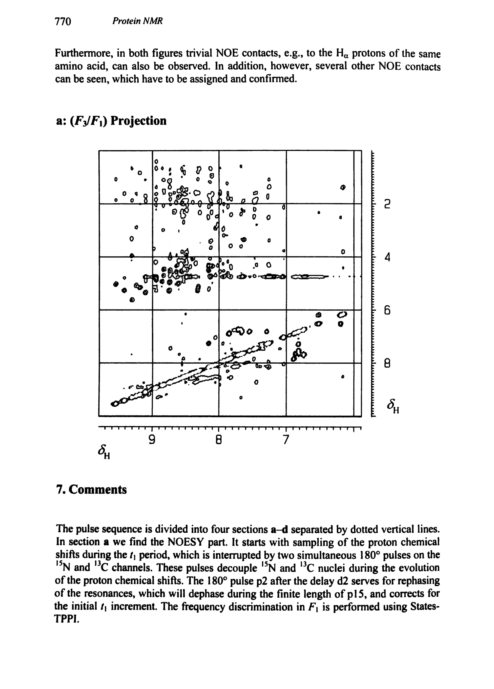
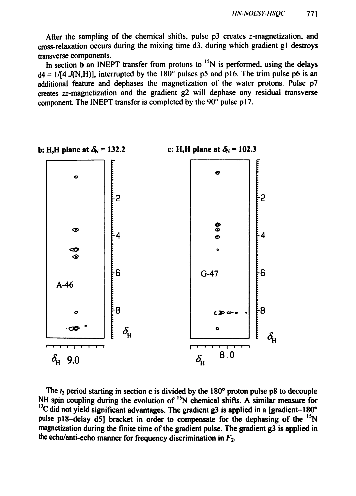
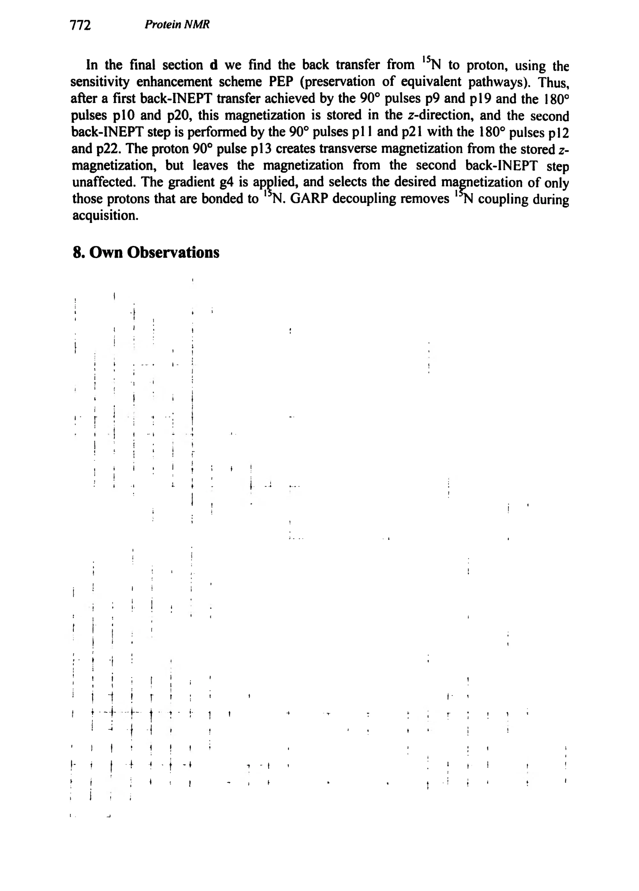

Experiment 15.17
HN-NOESY-HSQC
HN-NOESY-HSQC 三维相关实验
PDF 781–787 · 原书 766–772 · Protein NMR







核磁共振实验方法、脉冲序列与谱图实践
Experiment 15.17
HN-NOESY-HSQC 三维相关实验
PDF 781–787 · 原书 766–772 · Protein NMR






